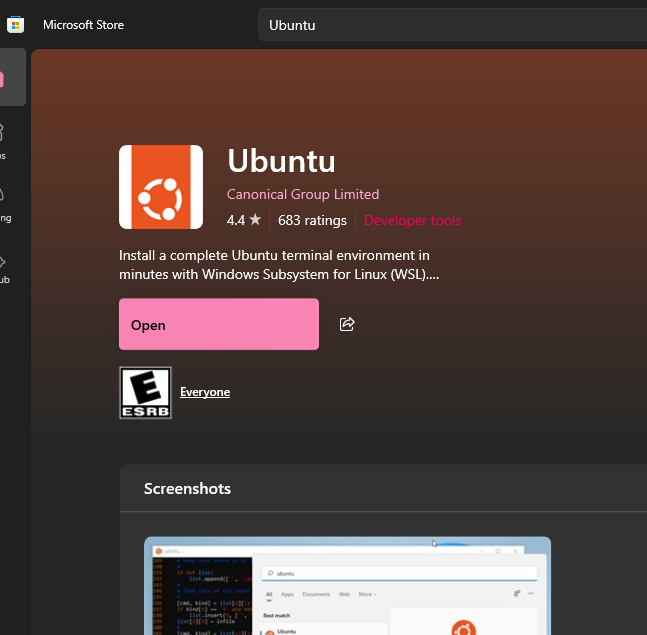
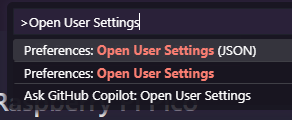
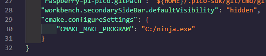
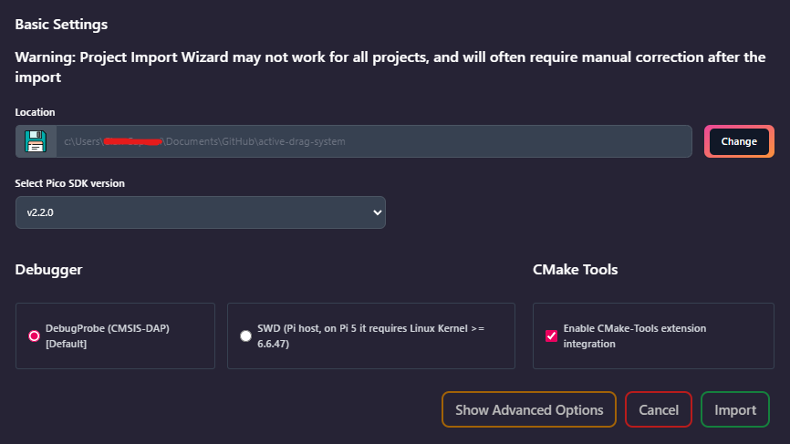
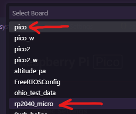
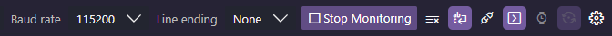

Windows
Intro: Punching Through Menus
According to statcounter, Windows makes up just under 71% of all global desktop operating systems. And, frankly, there's good reason for it; in most cases, software that you'll find on the internet will "just work" in a format that's designed for Windows, whether it's gaming on steam, development in Visual Studio, or any of the MS Office software that we all know and... may or may not love.
The trade-off to this is that a lot of the underlying things that make the OS run - which for our specific case (very nitty-gritty embedded development) we need access to - are obfuscated behind many layers of menus or proprietary software licensed by Microsoft. Instead of a bash terminal, windows has powershell. Instead of a single PATH variable, there is a registry that needs to be edited. These differences make it very difficult to expose the library code that our compilers need access to - so we'll need to use a couple bits third-party software that integrates it for us to gain access to said code.
GitHub Desktop
To work with git natively, we recommend the use of GitHub Desktop, as it simplifies working with the protocol significantly for our purposes. As it's explained in detail in the Git/GitHub tab on the left, we won't include a full guide to its usage here for brevity; we'll assume you have GitHub Desktop or some other method of using git installed, and have a repository cloned on your computer that you're ready to develop on.
WSL Guide
There are a couple of commands, mainly for working with git, that we'll need to run in a native bash terminal; to do this, we'll need to install a "distro" of Linux into the Windows Subsystem for Linux, or WSL. Notably, as the primary reason for doing this is to get direct commandline git access, if you have some other means of accessing it such as the Git for Windows toolkit, then you can skip this step and use it instead whenever a step says to open a WSL terminal.
- Open a
command promptwindow, and type and enterwsl --install. This may take several minutes. - Once the above is complete, reboot your laptop for WSL to be enabled.
- Now, go to the Microsoft Store, and look up and install
Ubuntu- there will likely be several versions, it should work with any of them. This is the "distro" of Linux you're installing.
- With
Ubuntuinstalled, type it into the Windows start menu to open a new instance of it. It will prompt you for a username and password - every time you openUbuntubeyond this, it will require this password. - Finally, in your terminal, enter the following commands. This will install
gitinto your WSL instance (after prompting you for a password), and thus, you'll be ready to use it for development!
VSCode + Extensions Guide
Thankfully for our sake, the Raspberry Pi foundation recognized that trying to configure all of the backend things for development on Windows was a nightmare, and they bundled all of it into a single VSCode extension. It should be able to intake any existing cmake project (i.e. one of our repos), and configure all of the necessary flags internally to compile it as is necessary for development. There's a little bit of finnicky backend configuration, but it's significantly easier than the WSL method.
- If you don't already have it, download and install VSCode on your device.
- Once you have VSCode installed, head to the
Extensionsbrowser. Search for and install the following three extensions:- Raspberry Pi Pico, by Raspberry Pi
- CMake Tools, by Microsoft
- Serial Monitor, by Microsoft
- Use
CTRL + SHIFT + Pin VSCode to open the Command Palette, then type in and selectOpen User Settings (JSON)- then scroll to the bottom of the file that just opened.
- Add a comma to the end of the last indented line of that settings file, and add the following config block to your user settings; for now, leave
CMAKE_MAKE_PROGRAMempty, as we'll put a value there shortly. - Download ninja for Windows from its Github - this program will handle
cmakeon the backend, so you don't have to. Unzip the folder you downloaded somewhere, and move theninja.exefile inside it to somewhere you'll remember it. - Left click the
ninja.exeexecutable to highlight it in File Explorer, then shift right click it (thanks Windows), and clickCopy as path. Then, paste the path you just copied into theCMAKE_MAKE_PROGRAMvariable you just added - the end result should look something like this. (For this example,ninja.exewas just placed directly in theC:\drive.)
With that done, you should be ready to import your repository and work on it!
Workflow Guide: Setup
For development on Windows, thankfully, almost the entire development process can be done natively in VSCode, barring a few first time setup things. This last section will break down all the steps for first time configuration of a newly cloned repository, and then the normal workflow steps to compile, upload, and test your code on a board within VSCode. Let's start with the first time configuration guide; for this writing, we'll use active_drag_system as an example.
- If you haven't already, clone a repository that you'd like to work on, and change to the appropriate branch. This can be done via whatever means are most convenient to you, most likely GitHub Desktop.
- Once you have the repository cloned, open its directory in file explorer. Shift right click on the "background space" without any files, and click
Open Linux terminal here- this will open a WSL terminal directly to where you were in file explorer, and may take a second to boot. - In WSL, type and enter
git submodule update --init --recursive. This will internally initialize all the submodules necessary for the code to build, and cannot be done in GitHub Desktop. Once this is done, you can close the WSL window. - Now, open VSCode, and enter the Raspberry Pi Pico extension you installed earlier. Click on the menu option that says
Import Project- we're about to do exactly what it says on the tin. - Inside the new tab that just opened, click
changeon theLocationbox, and select the repository directory - in this case,active_drag_system. All of the other options should be fine left as defaults, with one exception: click the checkbox that saysEnable CMake-Tools extension integration. ClickImportonce completed.
- Finally, select which board you'll be uploading your code to by clicking
Switch Boardin the Pico extension. The dialog box that pops up will provide many options, some internal and some defined by us; select the one for whichever board you'll be uploading to, usuallypico(a standard Pico 1) orrp2040_micro(an ADS PCB, as defined in that header file). If it prompts you forRISC-V Usage, clickNo. Once this is done, you're ready to debug!
Workflow Guide: Usage
With all the setup things out of the way, we're down to what you're actually here for - compiling, uploading, and debugging your code! Thankfully, this stage is very simple now that we've gotten all of the setup things out of the way; at this point, you should be able to open VSCode at any time and immediately be ready to compile and test.
- To compile your code, simply click the
Compilebutton on the right side of the bottom status bar, or clickCompile Projectin the options under the Pico extension. This will open a terminal window inside VSCode at the bottom, and show you the real-time output of the process. - To upload your code, first, unplug whatever board you're using, and plug it in with the
BOOTSELbutton held down to boot it into upload bode. Then, simply click theRunbutton to the right of theCompilebutton, or click theRun Project (USB)button in the Pico extension. This will compile your code, then upload it automatically viapicotool. - To debug your code, click on the
SERIAL MONITORtab of the bottom box that opened during the upload process to open the extension. Inside it, select the COM port that the board has opened - the easiest way to determine this if there are multiple is to unplug it, and see which one disappears. Select theToggle Terminal Modebutton (the one with a lil' shell icon on it) as depicted below, and then clickStart Monitoring- this should give you a full interactive serial terminal with the board, right inside VSCode!
Note that should you want to use a non-inside VSCode serial monitor, there are several other options. The easiest to use is PuTTY, which simply requires opening the right "Serial" port type after plugging in the board of your choice.